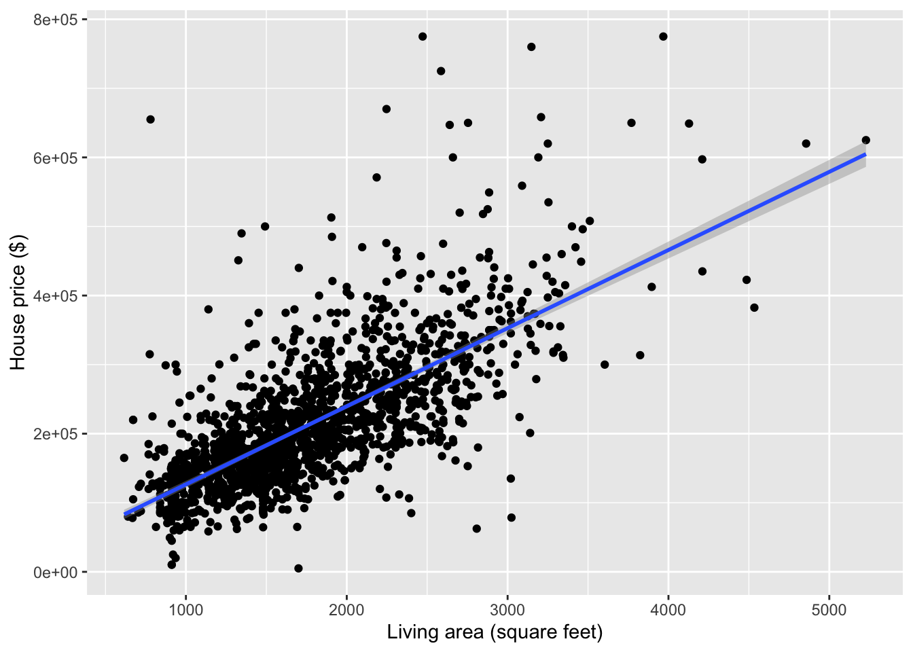

Topic 5 Modeling Concepts (Part 1)
Learning Goals
- Construct simple linear regression models with a quantitative predictor in R
- Use these models to describe relationships and make predictions
- Develop two ideas of model quality: \(R^2\) and residual standard error
- Develop ideas of variation in estimates from sample to sample
New Groups!
In your new groups…
- Introduce yourselves
- Give your preferred pronouns
- If you had one extra hour of free time a day, how would you use it?
Discussion

Models
- A model is a simplified description of the world.
- Statistical models are mathematical descriptions that are informed by (estimated from) data.
- A simple linear regression model is a line model that can be mathematically represented as below:
\[ E[Y] = \beta_0 + \beta_1\,X \]
- \(Y\) is a quantitative response or outcome variable. e.g., House price
- \(X\) is a quantitative predictor or explanatory variable. e.g., Square footage of the house
- The \(E[\,\,]\) means “expected value of”: this is why lines model trends in averages and not individual-level trends
- \(\beta_0\) and \(\beta_1\) are the coefficients of the model.
- These coefficients are obtained from our data using the method of least squares.
Interpreting the model coefficients
- When \(X = 0\), \(E[Y] = \beta_0\).
- This means that \(\beta_0\) is the expected value of the outcome when \(X = 0\).
- Note that this sometimes does not make sense!
- Centering the predictor can fix this.
- Don’t forget to report units in your interpretation!
- Case 1: \(X = a \qquad\qquad\qquad E[Y_1] = \beta_0 + \beta_1\,a\)
Case 2: \(X = a+1 \qquad\qquad E[Y_2] = \beta_0 + \beta_1\,(a+1)\)
\(E[Y_2] - E[Y_1] = \beta_1\)- This means that \(\beta_1\) is the expected change in the outcome per unit change in \(X\).
- Reporting units is important.
- The math shown here will be important when we extend these models to have multiple predictors.
Fitting linear regression models in R
# Fit the model and store the resulting information in "mod"
mod <- lm(y ~ x, data = your_dataset)
# Display summary output of the model
summary(mod)
# Extract the residuals of the model
residuals(mod)Exercises
A template RMarkdown document that you can start from is available here.
We will be looking at housing data from upstate New York. This dataset contains information on house price and structural characteristics for a large set of homes in Saratoga, NY.
library(readr)
library(ggplot2)
library(dplyr)
homes <- read_tsv("http://sites.williams.edu/rdeveaux/files/2014/09/Saratoga.txt")Exercise 1
Get to know the data by displaying the first few rows and getting the dimensions. What are the cases? How many cases do we have? What kinds of variables do we have information on?
Exercise 2
- Always start an analysis with visualization! Make a plot that shows the relationship between
Price(response) andLiving.Area(predictor). - Do you think a simple linear regression model is appropriate?
- Compute the correlation between
PriceandLiving.Area. Carefully explain what this tells you about the slope of the least squares line.
Exercise 3
Fit a linear regression model of
Priceas a function ofLiving.Areausing the code below.mod1 <- lm(Price ~ Living.Area, data = homes) summary(mod1)- The two numbers in the “Estimate” column of the output give the intercept and the slope for
Living.Area. Interpret both of these numbers. Is the intercept meaningful? We can center
Living.Areaat a more reasonable value. Let’s use 1000 square feet. Complete the code below to create a centered version ofLiving.Area.homes <- homes %>% ???(Living.Area.Shifted = Living.Area-1000)- You can actually determine the coefficients of the
Price ~ Living.Area.Shiftedmodel by hand. Based on the summary output ofmod1, work out what these new coefficients should be. Now check your answer to part (d) by fitting the model.
mod2 <- lm(???) summary(mod2)What is the residual for a $150,000 house that is 1000 square feet?
Exercise 4
In this exercise, we’ll develop some intuition for ideas about how to quantify the quality of a model.
- Based on your plot from Exercise 2, do you think that our
Price ~ Living.Areamodel is a good one? Explain by describing whether you think the variance of the residuals should be low or high for a good model. In the model summary output, there is a metric near the bottom called “Residual standard error”. The first number (ignore the “on XXXX degrees of freedom part”) is very close to the standard deviation of the residuals of the model. Verify this with the code below. Given that residual standard error is essentially a standard deviation, how do you think we can interpret this number?
mod1 %>% residuals() %>% sd()- Do you think that the variance of the residuals could ever be larger than the variance of the house prices? Why or why not?
There is a metric for linear regression models called \(R^2\) which is displayed in the model summary output near the bottom just after “Multiple R-squared”. This number is computed as: 1 - Var(residuals)/Var(response). Do you think this number should be high or low for a good model?
# If you are curious about checking the calculation 1-(var(residuals(mod1))/var(homes$Price))
Exercise 5
We only used a sample of Saratoga homes to estimate $113.123 as the slope for Living.Area. Based on your scatterplot from Exercise 2, how much do you think that slope estimate would change if we had a different sample of houses? A lot? A little? What are you thinking about as you formulate your opinion?